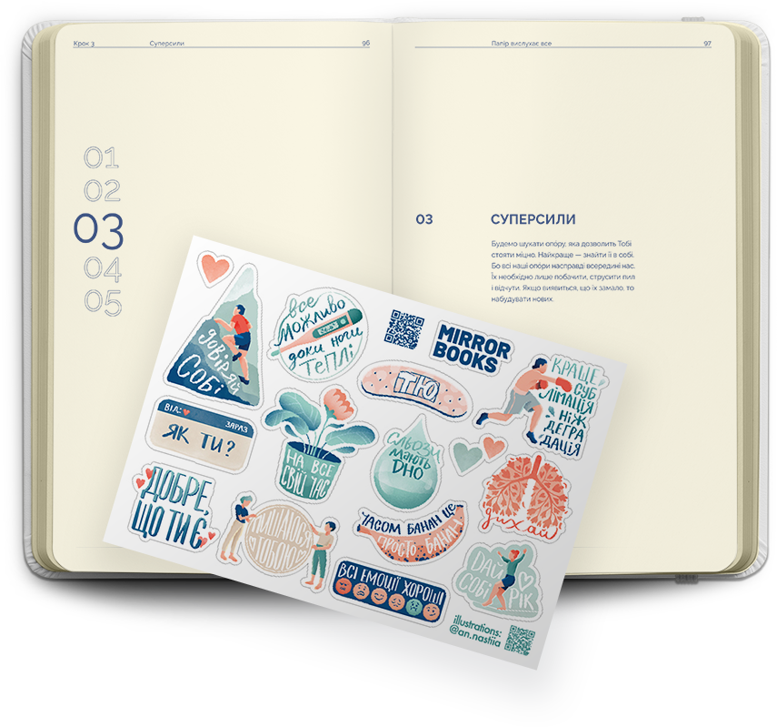
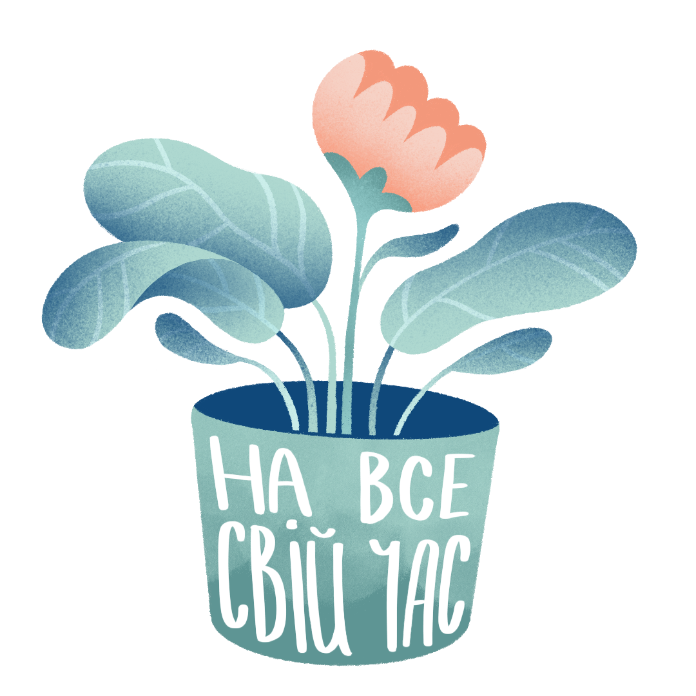

ПРО ЩОДЕННИК
Авторський щоденник психотерапевтки Анни Шийчук. Перевірений досвідом клієнтів приватної практики протягом 10-ти років.
- 92 сторінки: завдань для самоаналізу, пояснень та багато вільного простору;
- 5 розділів: кожен вчить розуміти почуття та наводить лад в думках;
- 3 місяці щоденних записів.
ЯК КОРИСТУВАТИСЯ?
Веди щоденник у безпечному місці
Щоб писати тоді, коли ти на одинці з собою. І прослідкуй, щоб записи зберігалися подалі від очей інших людей.
Розвивай звичку писати щодня
Потім форма запитань із щоденника інтегрується у твою свідомість і стане звичкою рефлексії на роки.
Будь чесним
Бо ти це робитимеш для себе, заради себе та для свого внутрішнього спокою.
Бери щоденник, коли хочеться діалогу з собою, а не монологу в голові. Він говорить українською мовою та вчить розуміти себе.
Наша свідомість прагне вийти і оселитися десь. На папері їй дуже добре. Коли ми пишемо, то знижується тривога і відпускає напруга. Папір витримає будь-які почуття і стани.

КОЛИ КОРИСТУВАТИСЯ?
- коли тривожно і емоції переповнюють;
- коли хочеться розвивати усвідомленість;
- коли є бажання розібратися в собі чи усамітнитися.
У подарунок до кожного щоденника ми додаємо наші терапевтичні стікери. Їх малювала ілюстраторка Анастасія Андрійчук.



ПАПІР ВИСЛУХАЄ ВСЕ
Терапевтичний щоденник.
Вартість 650 грн.
Раді знайомству і чекаємо твоїх позначок в Instagram! Цьом ♥

Ваше замовлення: